Reporting
Aksi Tanam Pohon dan Aksi Pulihkan Bumi
January 2026INI LHO ITS! 2026
January 20261000 Duta AI
October 2025Grand Final Duta ITS 2025
September 2025CEO Talk & Lesson Learned 2025
June 2025TEDxITS 2025: House of Cards
May 2025ITS Luncurkan SENOPATI
March 2025Robot Bayucaraka dan Banyubramanta
March 2025ITS Kukuhkan 6 Profesor Baru
February 2025Schematics REEVA 2024
November 2024Upacara Hari Pahlawan dan Dies Natalis ke-64
November 2024Short films & social content
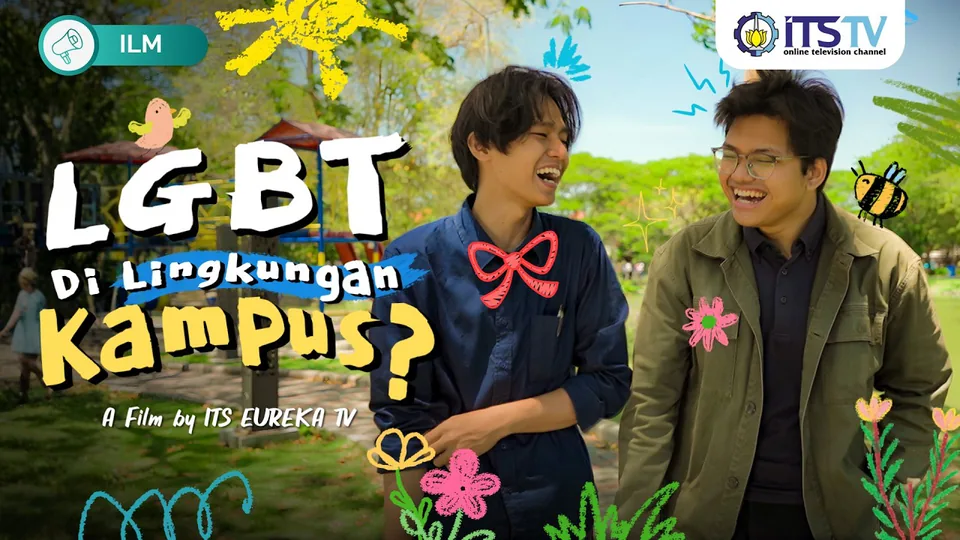
Di Balik Narasi Kebebasan
November 2026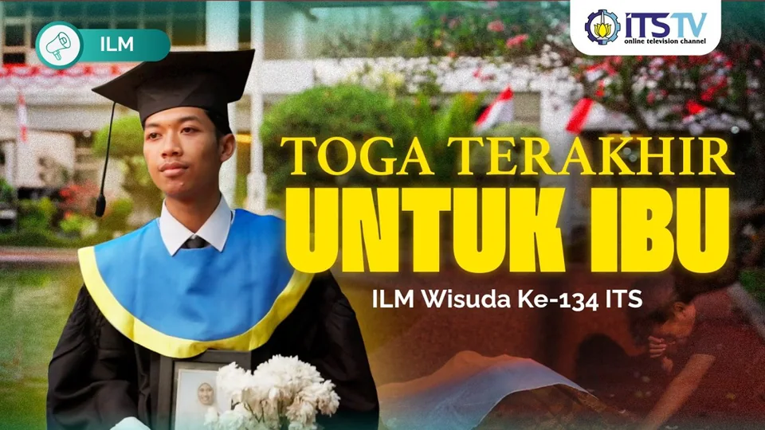
ILM Wisuda 134
October 2026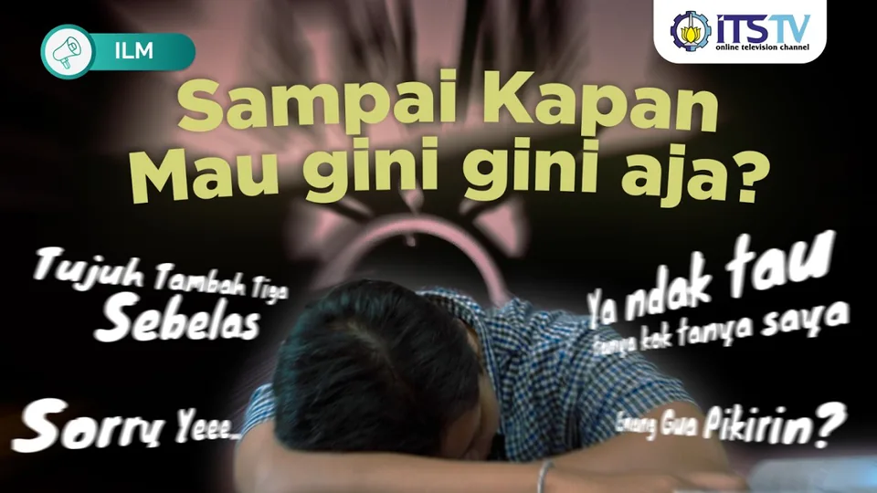
Pemimpin Otentik vs Pemimpin Anti-Kritik
August 2026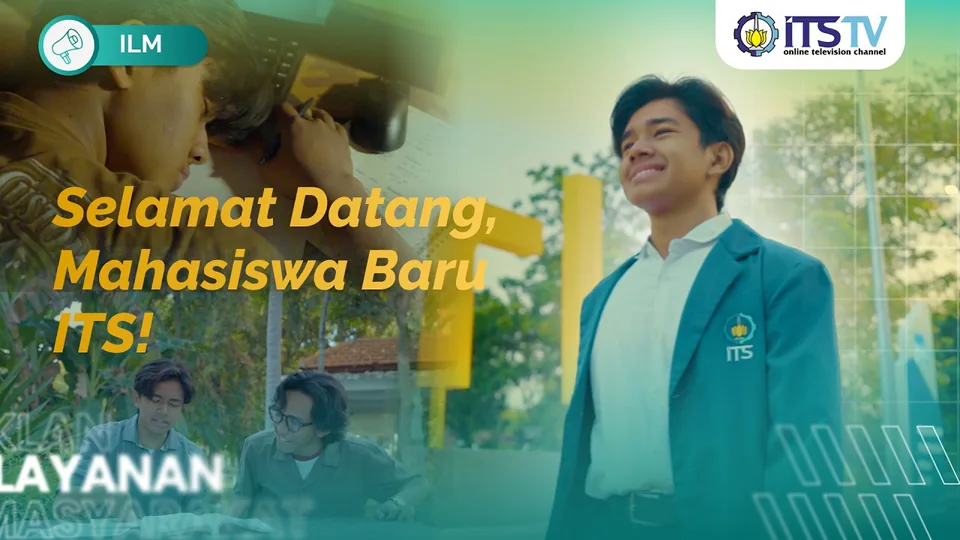
Ini Awal dari Ceritamu sebagai Mahasiswa ITS
August 2026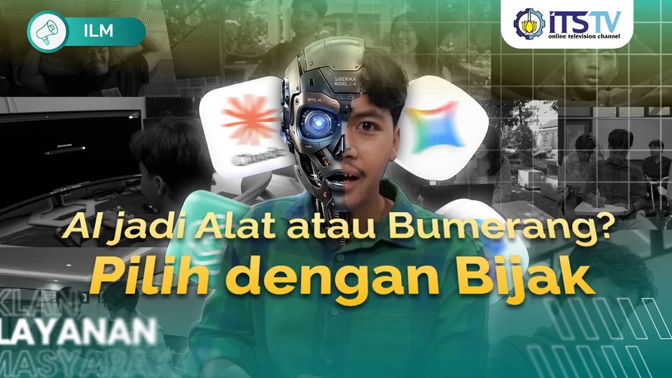
Kalau AI Bisa, Kenapa Harus Aku?
July 2026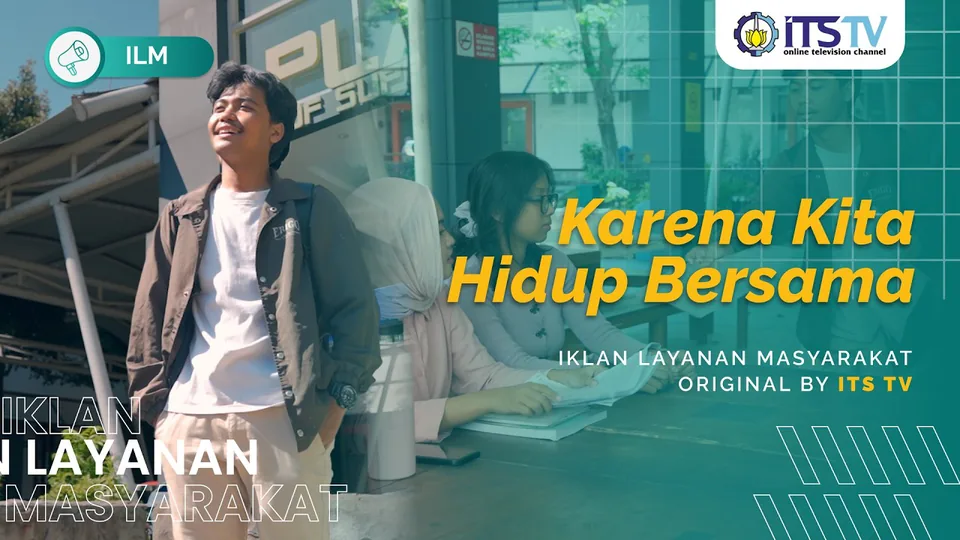
Gak Perlu Jadi Orang Lain untuk Memulai Perubahan
June 2026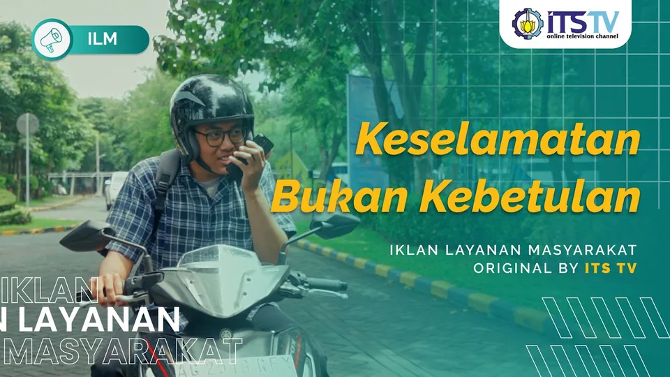
Setiap Perjalanan Punya Pilihan
March 2026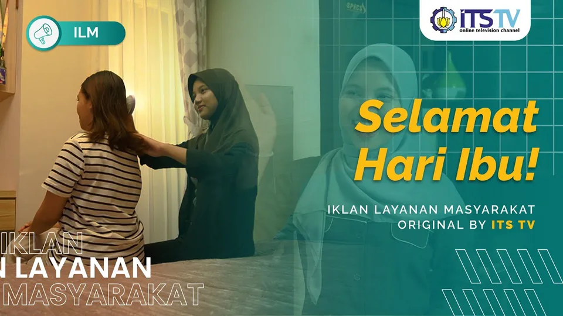
Langkah Ringanku, Lahir dari Kuatmu
December 2025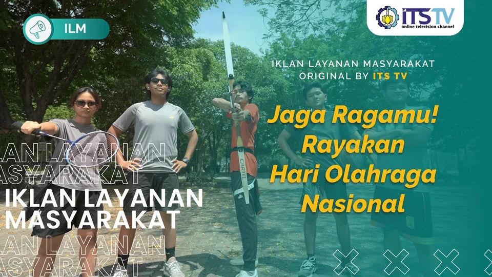
Jaga Ragamu, Raih Mimpimu
September 2025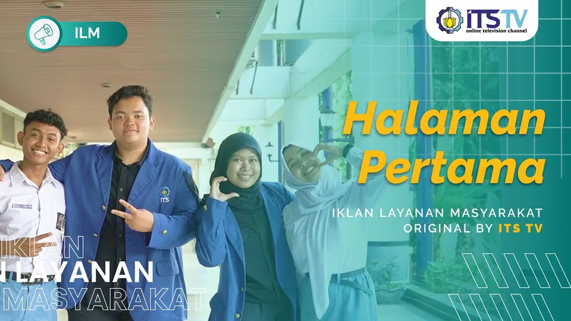
Halaman Pertama
July 2025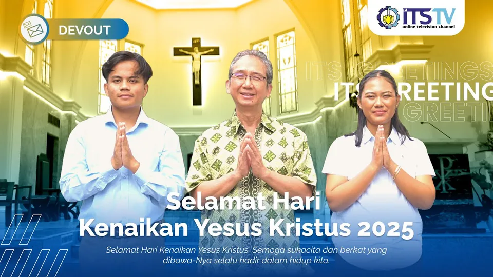
Selamat Hari Kenaikan Yesus Kristus 2025
May 2025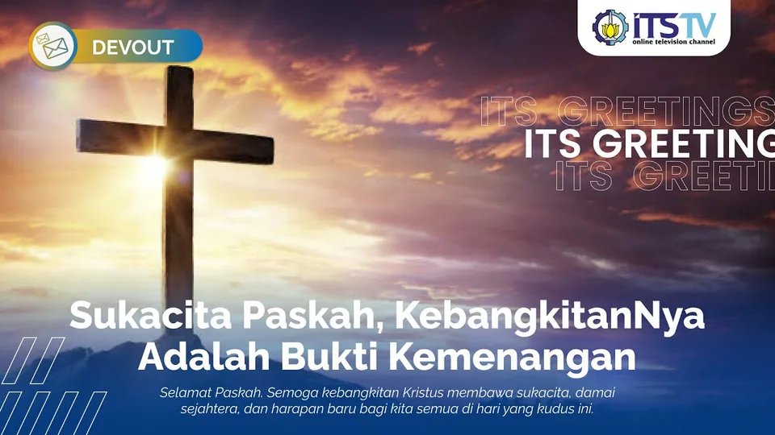
Selamat Hari Paskah 2025
April 2025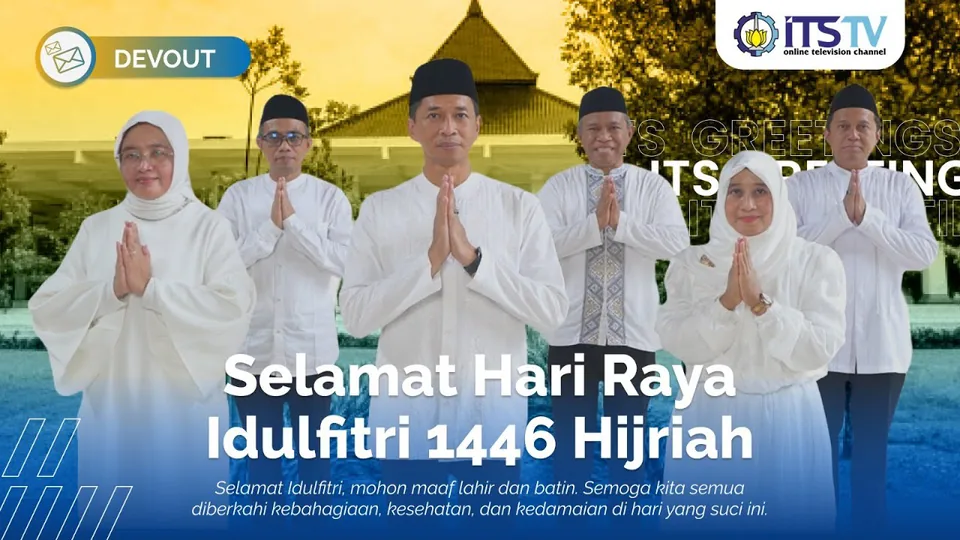
Selamat Idulfitri 1446 H
March 2025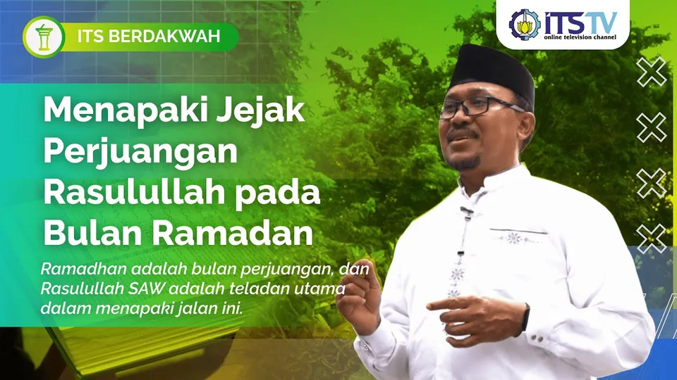
Menghidupkan Semangat Perjuangan Rasulullah | ITS Berdakwah
March 2025Live broadcast
About
I work on two sides, AI research and media
I study Artificial Intelligence Engineering at Institut Teknologi Sepuluh Nopember (2024 to 2028) on the Pertamina Sobat Bumi Scholarship. On the research side, most of my work starts as a research question and ends as a model, a prototype or a protocol someone can use. See the AI work →
On the media side, I lead the creative content division at ITS TV, where I present, report, dub, write scripts and run live broadcasts.
Media
PresentingReportingVoice-overScriptwritingLive broadcastvMix
AI and data
Pythonscikit-learnDeep learningComputer visionLLM and RAG
Experience
- Junior Data Entry, Freelance Technical Project, Surabaya2024Turned National Science Olympiad (OSN) math problems into structured JSON for an LLM training dataset
- Head of Creative Content Division, ITS TV2026 – nowLeads content strategy and production and reviews the team’s scripts
- Presenter and Creative Media Staff, ITS TV2024 – 2026Worked as presenter, reporter, voice-over talent, vision mixer and vMix operator
- Project Analyst, Desa Energi Berdikari, Pertamina Foundation2025 – nowMonitors a village renewable energy installation and leads its economic workstream
- Technical Staff, National Logic Competition, Schematics ITS2025Ran and tested the technical side of a national competition
- Research Presenter, Ewha Womans University, Seoul2023Comparative study of leadership and economic development in Korea, Malaysia and Indonesia